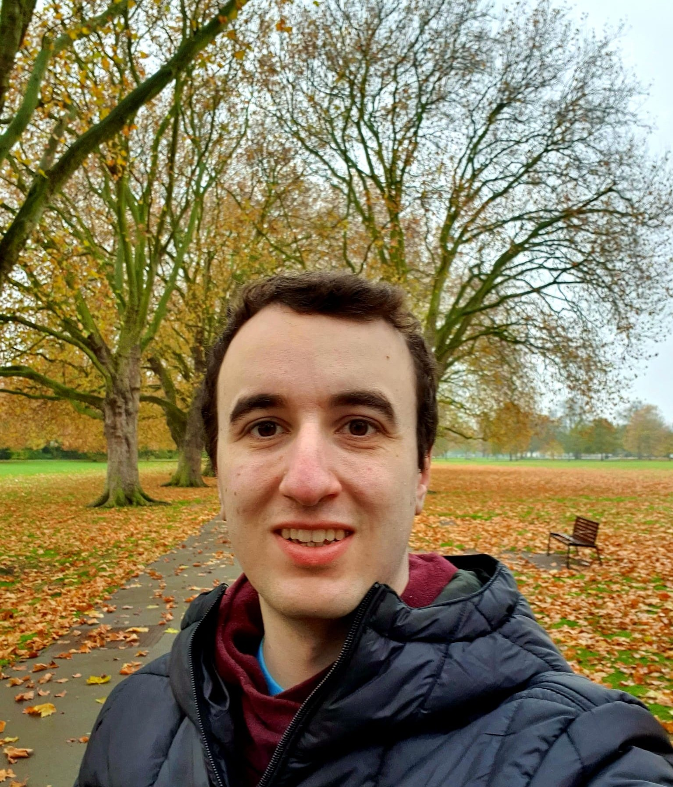

I don't trust mathematicians with beautiful websites

email: martioller (dot) math (at) gmail (dot) com
Starting in October 2022, I am a PhD student at the University of Cambridge under the supervision of Jack Thorne.
I receive funding from La Caixa Foundation, the Cambridge Trust and the DPMMS.
I am interested in number theory and arithmetic geometry, and more specifically arithmetic statistics.
Arithmetic statistics of isogeny Selmer groups associated to hyperelliptic curves.
Preprint. [arXiv] [pdf]
Geometry-of-numbers over number fields and the density of ADE families of curves having squarefree discriminant.
To appear in Journal of Number Theory. [arXiv] [pdf]
The density of ADE families of curves having squarefree discriminant.
To appear in Journal de Théorie des Nombres de Bordeaux [arXiv] [pdf]
(This webpage is permanently under construction)
Last updated: 5th June 2026